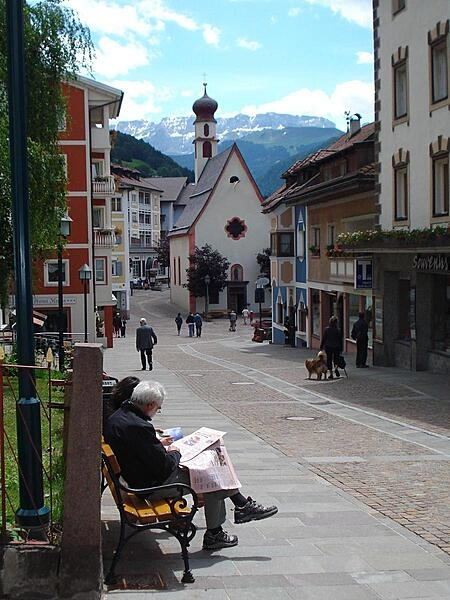
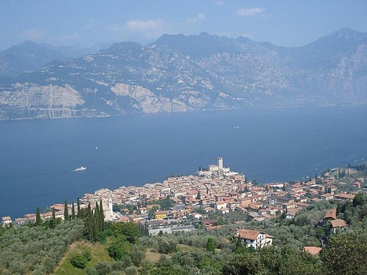

<!DOCTYPE html>
<html lang="en"></html>
<head>
  <meta charset="utf-8">
  <title>Italy</title>
</head>
  
<body>
    <h1>Italy</h1>
    
    <p>Italy became a nation-state in <time datetime="1861">1861</time> when the regional states of the peninsula, along with Sardinia and Sicily, 
    were united under King Victor Emmanuel II. An era of parliamentary government came to a close in the early 1920s 
    when Benito Mussolini established a Fascist dictatorship. 
    
    <p>His alliance with Nazi Germany led to Italy's defeat in World War II. A democratic republic replaced the monarchy in 1946 and economic revival followed.</p>
    
    <p>Italy is a charter member of <abbr title="North Atlantic Treaty Organization">NATO</abbr> and the European Economic Community ( <abbr title="European Economic Community">EEC</abbr> ) and its subsequent successors the <abbr title="European Commission">EC</abbr> and the <abbr title="European Union">EU</abbr>. It has been
    at the forefront of European economic and political unification, joining the Economic and Monetary Union in <time datetime="1999">1999</time>.</p>
    
    <p>Persistent problems include sluggish economic growth, high youth and female unemployment, organized crime, corruption,
    and economic disparities between southern Italy and the more prosperous north.</p>

    <h2>Learn More</h2>

    <nav>
      <ul>
        <li><a href="#Geography">Geography</a></li>
        <li><a href="#People-and-Society">People and Society</a></li>
        <li><a href="#Environment">Environment</a></li>
  </ul>
</nav>

<section id="Geography"></section>
    <h3>Geography</h3>

    

    <h4>Location</h4>
        <p>Southern Europe, a peninsula extending into the central Mediterranean Sea, northeast of Tunisia</p>
   
    <h4>Climate</h4>
        <p>Predominantly Mediterranean; alpine in far north; hot, dry in south</p>
    
    <h4>Natural Resources</h4>
        <p>Coal, Antimony, Mercury, Zinc, Potash, Marble, Barite, Asbestos, Pumice, Fluorspar, Feldspar, Pyrite (sulfur), Natural gas and Crude oil reserves, Fish, Arable land</p>

<section id="People-and-Society"></section>
    <h3>People and Society</h3>

    

    <h4>Populatiom</h4>
        <p>61,021,855</p>
    
    <h4>Birth Rate</h4>
        <p>7 births/1,000 population</p>
    
    <h4>Death Rate</h4>
        <p>11.3 deaths/1,000 population</p>

<section id="Environment"></section>
    <h3>Environment</h3>

    

        <h4>Current Issues</h4>
            <p>Air pollution from industrial emissions such as sulfur dioxide; coastal and inland rivers polluted from industrial and agricultural effluents; acid rain damaging lakes; inadequate industrial waste treatment and disposal facilities.</p>
        
        <h4>Revenue From Coal</h4>
            <p>0% of GDP</p>
        
        <h4>Total Renewable Water Resources</h4>
            <p>191.3 billion cubic meters</p>
</body>
</html>
            
            